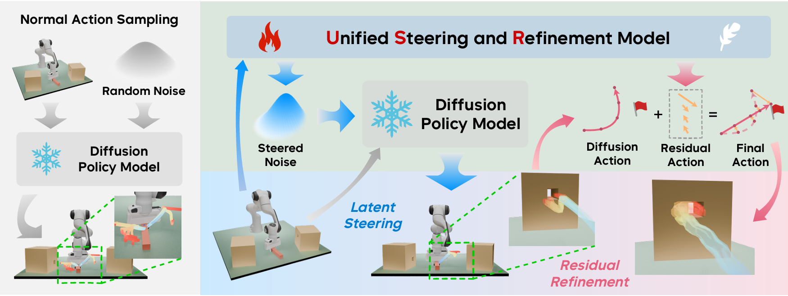

|
Ziyan Li I am a senior undergraduate in the ACM Honors Class at Shanghai Jiao Tong University, majoring in Computer Science. Currently, I am a research intern working on humanoid loco-manipulation, advised by Prof. Saurabh Gupta at UIUC. Previously, I had the privilege of working with Prof. Weinan Zhang at Shanghai Jiao Tong University. My research interests lie at the intersection of robotics and reinforcement learning, focusing on developing dexterous embodied agents that can generalize robust behaviors across complex, open-world environments. I am actively seeking PhD positions for Fall 2026 and would be delighted to connect. Please feel free to contact me. |

|
Papers |
|  |
USR: Unified Latent Steering and Residual Refinement for Online Improvement of Diffusion Policy Models
Zhengbang Zhu*, Ziyan Li*, Xiu Yuan*, Hanbo Zhang, Yuxiao Liu, Chongjie Zhang, Yong Yu, Weinan Zhang, Minghuan Liu 2025 Paper |
|
Website's code is from Jon Barron. |